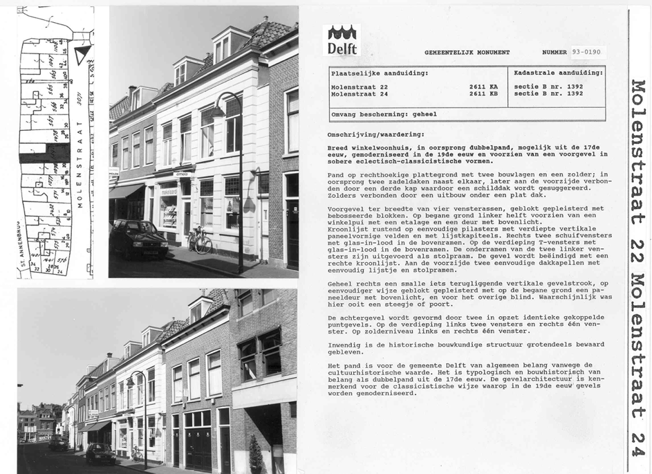
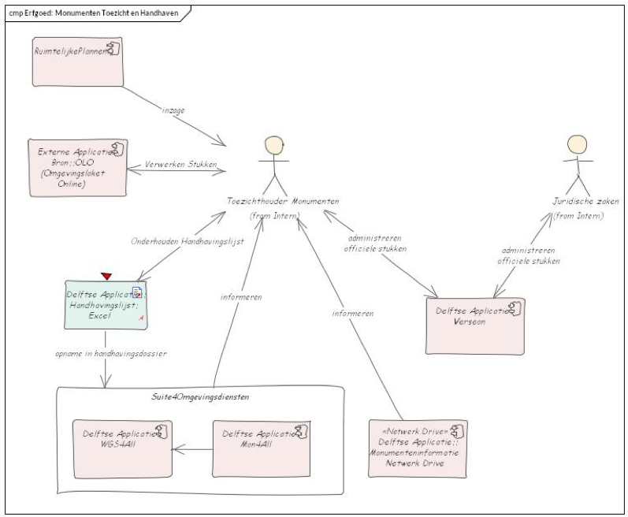
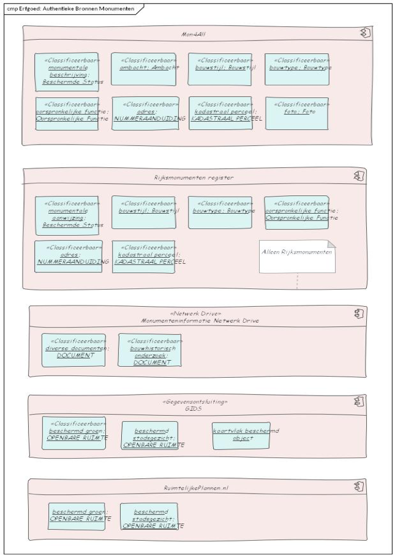
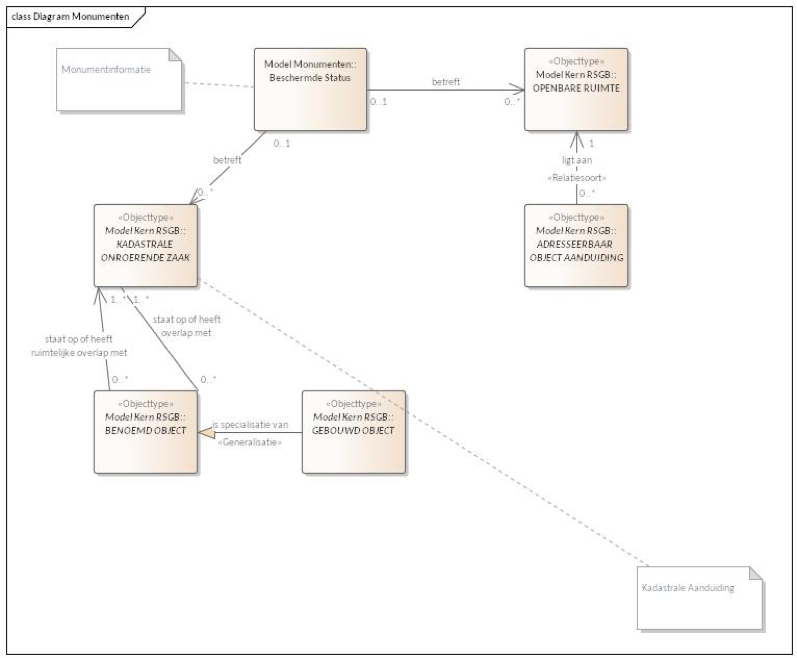

Voorbeeld Uitwerking Informatie Gemeentelijke Monumenten
Gemeentelijke Monumenten
Delft staat met zo’n 1500 beschermde monumenten in de top-10 van monumentensteden in Nederland. De binnenstad geniet internationale faam, maar in het monumentenbeleid hebben ook de gebieden buiten de binnenstad hun plek. De cultuurhistorische waarden zijn op verschillende manieren beschermd. Naast gemeentelijke en rijksmonumenten telt Delft vier van rijkswege beschermde stadsgezichten, namelijk de binnenstad, de Nieuwe Plantage, het Agnetapark en TU-Noord. Bovendien heeft de gemeente dertien zogenaamde Groene Parels vastgesteld. Dit zijn groengebieden die vanuit het bestemmingsplan zijn beschermd. De wettelijke taken van de monumentadviseurs zijn gericht op bescherming en behoud, toch bestaat het grootste deel van het werk uit het voortdurend inspringen op ontwikkelingen en veranderingen van de fysieke leefomgeving. Hoe kunnen we gebouwen en gebieden zo aanpassen dat de cultuurhistorische waarden bewaard blijven, maar dat ze blijven functioneren? Een nieuwe functie of verduurzaming, omgang met monumenten is altijd maatwerk. Geen monument is hetzelfde. In de loop der tijd is het werkgebied van de monumentadviseurs breder geworden en strekt het zich uit over het hele erfgoedspectrum, waar het de fysieke leefomgeving betreft. Natuurlijk zijn er objecten waar behoud altijd voorop staat. Denk aan het Stadhuis, de grachten. Maar de adviseurs zijn ook betrokken bij bijvoorbeeld gebiedsontwikkelingen. De cultuurhistorische waarden bieden dan een kader waarop verder kan worden gebouwd. Wat zijn de karakteristieken van het gebied en welke zijn het waard om te behouden? Welke verhalen willen we vertellen? En niet alleen wij, maar de hele stad. Erfgoed is het middel bij uitstek om met elkaar in gesprek in te gaan, om te verbinden, om je thuis te voelen. Delft volgt hiermee het landelijke spoor richting de omgevingswet, waarin erfgoed als waardevolle omgevingskwaliteit is geformuleerd. Het Delftse beleid ten aanzien van monumenten staat beschreven in:
- Monumentennota 2007-2017
- Monumentenverordening gemeente Delft
- Welstandsbeleid en sneltoetscriteria (incl. Welstandsnota Delft)
- Verordening op de Commissie voor Welstand en Monumenten
- Uitvoeringsrichtlijnen Monumentenzorg Delft
- Paragraaf Historie/Cultuurhistorie van alle vastgestelde bestemmingsplannen.
- Erfgoednota
Het monumentenbeleid van de gemeente wordt uitgevoerd door een team van monumentenadviseurs, onderdeel van de afdeling Erfgoed. Terwijl de archeologen van dezelfde afdeling zich bezighouden met ondergrondse cultuurhistorie, zijn de monumentadviseurs verantwoordelijk voor een zorgvuldige omgang met de bovengrondse cultuurhistorische waarden van de stad en houden zij zich bezig met:
- Wettelijke taken
- Toezien op zorgvuldige omgang met monumenten
- Toezien op zorgvuldige omgang met de beschermde stadsgezichten, incl. openbare ruimte, zoals: inrichting, bruggen en plaveisel.
- Waardering cultuurhistorie in bestemmingsplannen.
- Waardering cultuurhistorie bij gebiedsontwikkeling.
- Vergunningverlening voor bouwplannen, zowel voor rijksmonumenten als gemeentelijke monumenten (WABO en straks Omgevingswet)
- Toezicht en handhaving op afgegeven vergunningen
- Onderhouden gemeentelijke monumentenregistratie (nu in Mon4All) met daarin rijksmonumenten en gemeentelijke monumenten.
- Advisering, binnengemeentelijk, aan monumenteigenaren en aan het publiek
- Bouwhistorisch onderzoek om de cultuurhistorische waarden in kaart te brengen
- Afgeven beschikkingen voor Subsidies en Financieringen voor monumenten
- Participatie, ontvangend in de vorm van stadsgesprekken, maar ook als partner in initiatieven vanuit de stad
Meerdere panden binnen de Gemeente Delft hebben een beschermde status. Dit kan zijn doordat ervan rijkswege een beschermde status aan is toegekend, men spreekt dat dan van een rijksmonument. Of het kan zijn dat er vanuit de gemeente een beschermde status is toegekend. Men spreekt in dit geval van een gemeentelijk monument. Het verlenen van beschermde status door de gemeente verloopt via een zogenaamd aanwijsbeschrijving.

Applicaties en Beleidsdomeinen
De afdeling Monumenten gebruikt de volgende administraties:
- Mon4All, voor de administratie van objecten en gebieden met een beschermde status. Mon4All staat op de nominatie voor vervanging.
- Suite4Omgevingsdiensten voor vergunningverlening. Suite4Omgevingsdiensten staat ook op de nominatie voor vervanging, in het kader van de invoering van de omgevingswet.
- GIDS, voor monumenten, beschermde stadsgezichten en beschermde groengebieden op de kaart, evenals historische kaartlagen.
- Verseon, voor vastlegging alle officiële communicatie.
- delft.nl/monumenten voor de publicatie van de regelgeving.
- Een drive met een uitgebreid mappensysteem, geordend op onder andere object, straat, gebied, ten behoeve van opslag van documentatie voor vergunningsaanvragen, bouwhistorische informatie en foto’s.
- Een drive die we delen met VTH, waarin de documenten bij de OLO-aanvragen worden opgeslagen om het gat te overbruggen tussen het loket en het archief.
- Werklijst: een Excelbestand met actuele vergunningsaanvragen, VJV’s en collegiale adviezen
- Handhavingslijst: een Excelbestand met alle handhavingszaken.
- OLO: de monumentadviseurs (zowel voor vergunningverlening als voor toezicht) werken direct in OLO om zo binnengekomen stukken te kunnen afhandelen. Omdat de OLO hier niet voor toegerust is en af en toe niet of bijna niet toegankelijk is, wordt van de genoemde aanvullende overzichtslijsten/mappen gebruik gemaakt.

Medewerkers van Monumenten registreren objecten en gebieden met een monumentenstatus in Mon4All. Mon4All maakt onderdeel uit van Suite4Omgevingsdiensten. Het gaat hier om zaken als:
- Locatie (adres en coördinaten)
- Kadastrale gegevens
- Type monument: rijks en gemeentelijk, cultuurhistorisch waardevolle waardevol
- Type gebied: beschermd stadsgezicht (op adres)
- Bouwhistorische waarde/verwachting (op adres en op basis van onderzoek, bijv. oude kern, oude bouwhistorische sporen)
- Inhoudelijke kenmerken (zoals: bouwjaar, gebruiksfunctie, architect en ambacht)
- Foto’s en Documenten (bij gemeentelijke monumenten is het aanwijsdocument vaak als .jpg toegevoegd)
- Aanwijsbeschrijving, officiële verklaring waarin de aanwijzing als monument staat beschreven. Meestal inclusief een tekening van het betreffende perceel.
Mon4All kent geen automatische koppeling met BAG of BRK (Kadaster).
Vanuit Mon4All wordt de informatie over monumenten gepubliceerd naar GIDS voor afbeelding op de kaart, en naar de website van de gemeente. In Mon4All zijn de Beschermde Stadsgezichten op adres geregistreerd. In GIDS zijn deze als vlak zichtbaar. Rijksmonumenten staan geadministreerd in het Rijksmonumentenregister . Dit is het officiële en actuele register van de objecten en gebieden die een rijksbescherming genieten. Het is bovendien de bron voor de gegevens van de rijksmonumenten in Mon4all. Het laat zich aanzien als een exacte kopie van de gegevens. De gemeente is echter exacter in het aangeven van de coördinaten van de beschermde objecten. In Suite4Omgevingsdiensten (WGS4All) worden in samenwerking met andere afdelingen, waaronder VTH, de bouwvergunningen behandeld. Het gaat hier zowel om de afhandeling van vergunningaanvragen voor gemeentelijke als rijksmonumenten als cultuurhistorisch waardevolle bebouwing als herinrichting groengebieden (kapvergunningen en aanlegvergunningen). De drive met documentatie voor vergunningsaanvragen, bouwhistorische informatie en foto’s bevat persoonsgebonden informatie en is niet geschikt voor publicatie aan het publiek. In Verseon worden alle officiële documenten opgeslagen, zoals verleende vergunningen en verstrekte leningen.

Vanuit de toezichthoudende rol binnen Monumenten gebruikt men het OLO voor het verzenden en ontvangen van documenten van/naar vergunningaanvragers. De objecten waar toezicht plaatsvindt worden geadministreerd binnen de handhavingslijst, en overgenomen in Suite4Omgevingsdiensten. Alle officiële documenten worden in Verseon opgeslagen. Als er sprake in van handhaving, bijvoorbeeld doordat een dwangsom is opgelegd dan vindt dat plaats in samenwerking met Juridische zaken.
Applicaties en Gegevens
In de volgende figuur zijn de authentieke bronnen met hun gegevens weergegeven. WGS4All als onderdeel van Suite4Omgevingsdiensten is weggelaten, omdat deze in de uitwerking van VTH is opgenomen, conform zaakgericht werken.

In de vorige figuur is de dubbele registratie in gegevens te zien die het Rijksmonumentenregister en Mon4All hebben (noodzakelijkerwijs, zie ‘Observatie). In Mon4All kunnen wat meer attributen opgeslagen worden, en worden naast de rijksmonumenten ook de gemeentelijke monumenten bijgehouden.
Ook is te zien hoe de beschermde groengebieden in GIDS zijn opgeslagen, terwijl GIDS alleen is bedoeld voor weergave van informatie. De bescherming van groengebieden is geregeld in het bestemmingsplan, die is te vinden in Ruimtelijkeplannen.nl. In GIDS zijn het beschermd groen en de beschermde stadsgezichten opgenomen. Ook de contouren van de objecten met een beschermde status staan in GIDS (hiervan is GIDS de enige bron).
Gegevensdefinities
Als kern in het entiteitenmodel monumenten staat ‘Beschermde Status’ Hierin zijn de gegevens en relaties uitgewerkt die geregistreerd staan over een monument. Dit buiten de gegevens die al de BAG (Basisregistratie Adressen en Gebouwen) en de BRK (Basisregistratie Kadaster). In de volgende figuur is uitgewerkt wat de relatie is met deze basisregistraties.

In ‘Beschermde Status’ staan zaken opgenomen als: rijksmonumentcode en/of gemeentemonumentcode, datum opname in register, omschrijving en soort monument. Aan ‘Beschermde Status’ zijn gekoppeld (met per gekoppeld entiteit de attributen):
- ‘Bouwactiviteit’ (0 of meer): bouwjaar vanaf, bouwjaar tot, indicatie, omschrijving;
- ‘DOCUMENT’ (0 of meer): alle documenten behorende bij het monument;
- ‘Foto’ (0 of meer): alle beeldmateriaal van het monument;
- ‘Ambacht’ (0 of meer): ambachtsoort dat in het monument is uitgevoerd, jaar vanaf en jaar tot;
- ‘Bouwtype’ (0 of meer): hoofdcategorie, subcategorie en toelichting
- ‘Bouwstijl’ (0 of meer): hoofdstijl, substijl, zuiverheid en toelichting
- ‘Oorspronkelijke functie’ (0 of meer): functie, functiesoort en hoofdfunctie, hoofdcategorie, subcategorie en toelichting.

Een ‘Beschermde Status’ kan één of meerdere ‘KADASTRALE ONROERENDE ZAAK’(en) betreffen, en ook één of meer stuk(ken) ‘Openbare Ruimte’ betreffen, zoals een (deel van een) straat of een stuk groen. Zowel ‘KADASTRALE ONROERENDE ZAAK’ als ‘Openbare Ruimte’ komen uit de RSGB en hebben een koppeling met de BAG, waardoor ze te relateren zijn aan informatie uit de basisregistraties. De terminologie uit de RSGB is hier aangehouden om aan te sluiten op de overige onderdelen uit het Gemeentelijk Gegevensmodel en op de basisregistraties.